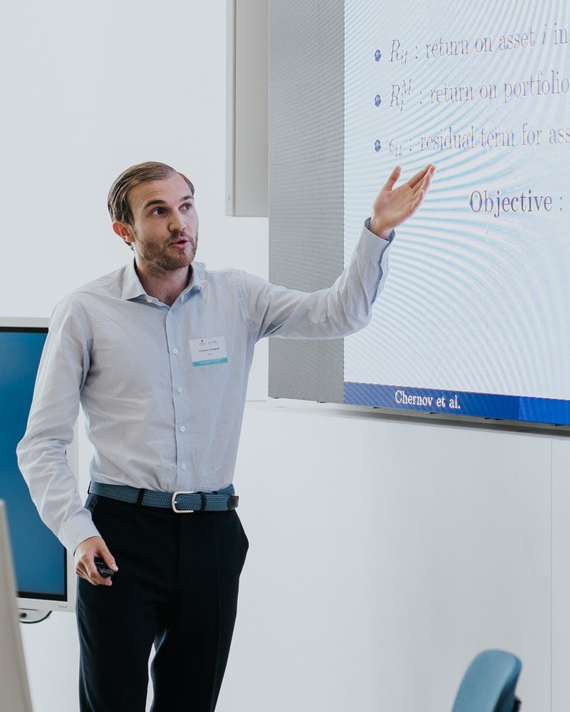

Scaling Point-in-Time Language Models
Decoder-only transformers of up to 4B parameters, trained on 1T chronologically filtered tokens, largely close the gap between lookahead-free language models and their unconstrained counterparts.
EPFL & Swiss Finance Institute
PhD Candidate in Machine Learning applied to Finance
My research is in machine learning applied to finance, with a focus on asset pricing. I study how to test asset pricing models when the number of assets is large, how machine-learning models generalize, and how to build language models free of lookahead bias for financial applications. My work combines random matrix theory, kernel methods and large-scale model training.

Decoder-only transformers of up to 4B parameters, trained on 1T chronologically filtered tokens, largely close the gap between lookahead-free language models and their unconstrained counterparts.
Optimizing the neural tangent kernel explicitly, rather than implicitly through gradient descent, yields kernels that match or outperform the deep networks they are derived from.
Extends the Gibbons–Ross–Shanken test to settings where test assets far outnumber observations, using random matrix theory to correct the bias of regularized covariance estimates.
Scaling Point-in-Time Language Models accepted at NeurIPS 2026
Best Teaching Assistant Award, EPFL Master in Financial Engineering
Presented A Test of the Efficiency of a Given Portfolio in High Dimensions at SoFiE (Paris) and ESSFM (Gerzensee)
New working paper: Training NTK to Generalize with KARE